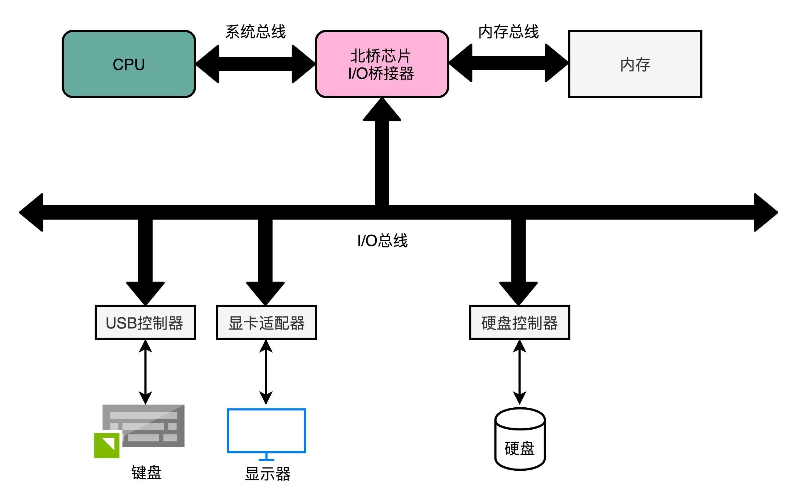
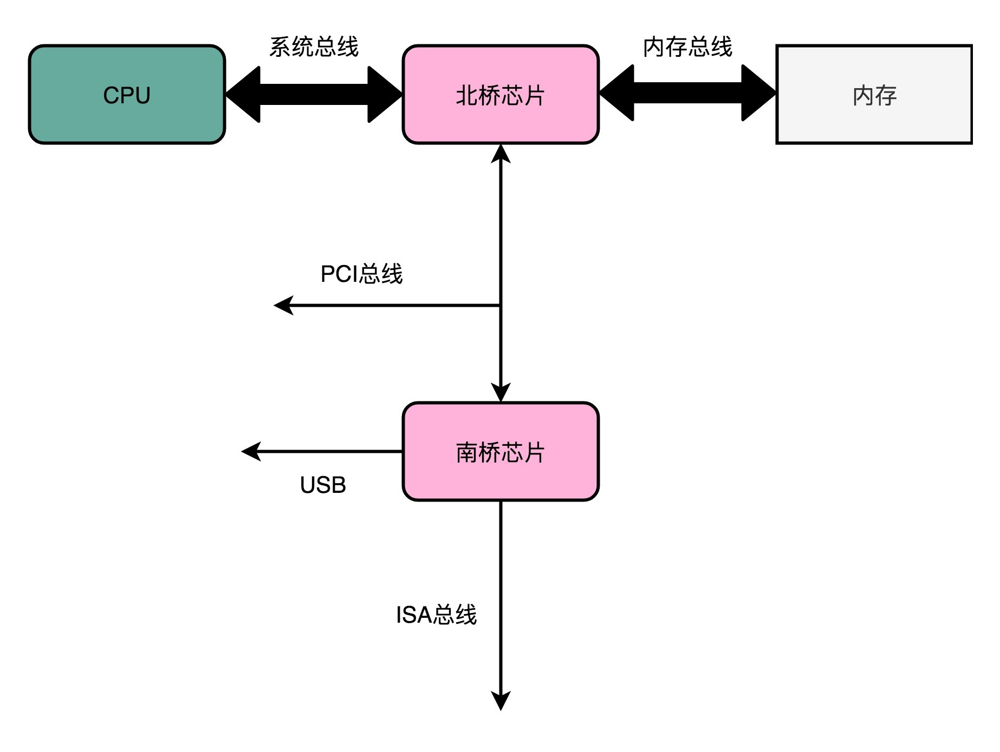

- 00 开篇词 为什么你需要学习计算机组成原理？.md
- 01 冯·诺依曼体系结构：计算机组成的金字塔.md
- 02 给你一张知识地图，计算机组成原理应该这么学.md
- 03 通过你的CPU主频，我们来谈谈“性能”究竟是什么？.md
- 04 穿越功耗墙，我们该从哪些方面提升“性能”？.md
- 05 计算机指令：让我们试试用纸带编程.md
- 06 指令跳转：原来if...else就是goto.md
- 07 函数调用：为什么会发生stack overflow？.md
- 08 ELF和静态链接：为什么程序无法同时在Linux和Windows下运行？.md
- 09 程序装载：“640K内存”真的不够用么？.md
- 10 动态链接：程序内部的“共享单车”.md
- 11 二进制编码：“手持两把锟斤拷，口中疾呼烫烫烫”？.md
- 12 理解电路：从电报机到门电路，我们如何做到“千里传信”？.md
- 13 加法器：如何像搭乐高一样搭电路（上）？.md
- 14 乘法器：如何像搭乐高一样搭电路（下）？.md
- 15 浮点数和定点数（上）：怎么用有限的Bit表示尽可能多的信息？.md
- 16 浮点数和定点数（下）：深入理解浮点数到底有什么用？.md
- 17 建立数据通路（上）：指令加运算=CPU.md
- 18 建立数据通路（中）：指令加运算=CPU.md
- 19 建立数据通路（下）：指令加运算=CPU.md
- 20 面向流水线的指令设计（上）：一心多用的现代CPU.md
- 21 面向流水线的指令设计（下）：奔腾4是怎么失败的？.md
- 22 冒险和预测（一）：hazard是“危”也是“机”.md
- 23 冒险和预测（二）：流水线里的接力赛.md
- 24 冒险和预测（三）：CPU里的“线程池”.md
- 25 冒险和预测（四）：今天下雨了，明天还会下雨么？.md
- 26 Superscalar和VLIW：如何让CPU的吞吐率超过1？.md
- 27 SIMD：如何加速矩阵乘法？.md
- 28 异常和中断：程序出错了怎么办？.md
- 29 CISC和RISC：为什么手机芯片都是ARM？.md
- 30 GPU（上）：为什么玩游戏需要使用GPU？.md
- 31 GPU（下）：为什么深度学习需要使用GPU？.md
- 32 FPGA、ASIC和TPU（上）：计算机体系结构的黄金时代.md
- 33 解读TPU：设计和拆解一块ASIC芯片.md
- 34 理解虚拟机：你在云上拿到的计算机是什么样的？.md
- 35 存储器层次结构全景：数据存储的大金字塔长什么样？.md
- 36 局部性原理：数据库性能跟不上，加个缓存就好了？.md
- 37 理解CPU Cache（上）：“4毫秒”究竟值多少钱？.md
- 38 高速缓存（下）：你确定你的数据更新了么？.md
- 39 MESI协议：如何让多核CPU的高速缓存保持一致？.md
- 40 理解内存（上）：虚拟内存和内存保护是什么？.md
- 41 理解内存（下）：解析TLB和内存保护.md
- 42 总线：计算机内部的高速公路.md
- 43 输入输出设备：我们并不是只能用灯泡显示“0”和“1”.md
- 44 理解IO_WAIT：IO性能到底是怎么回事儿？.md
- 45 机械硬盘：Google早期用过的“黑科技”.md
- 46 SSD硬盘（上）：如何完成性能优化的KPI？.md
- 47 SSD硬盘（下）：如何完成性能优化的KPI？.md
- 48 DMA：为什么Kafka这么快？.md
- 49 数据完整性（上）：硬件坏了怎么办？.md
- 50 数据完整性（下）：如何还原犯罪现场？.md
- 51 分布式计算：如果所有人的大脑都联网会怎样？.md
- 52 设计大型DMP系统（上）：MongoDB并不是什么灵丹妙药.md
- 53 设计大型DMP系统（下）：SSD拯救了所有的DBA.md
- 54 理解Disruptor（上）：带你体会CPU高速缓存的风驰电掣.md
- 55 理解Disruptor（下）：不需要换挡和踩刹车的CPU，有多快？.md
- 结束语 知也无涯，愿你也享受发现的乐趣.md
42 总线：计算机内部的高速公路
专栏讲到现在，如果我再问你，计算机五大组成部分是什么，应该没有人不知道了吧？我们这一节要讲的内容，依然要围绕这五大部分，控制器、运算器、存储器、输入设备和输出设备。
CPU 所代表的控制器和运算器，要和存储器，也就是我们的主内存，以及输入和输出设备进行通信。那问题来了，CPU 从我们的键盘、鼠标接收输入信号，向显示器输出信号，这之间究竟是怎么通信的呢？换句话说，计算机是用什么样的方式来完成，CPU 和内存、以及外部输入输出设备的通信呢？
这个问题就是我们今天要讲的主题，也就是总线。之前很多同学留言问，我什么时候会讲一讲总线。那这一讲，你就要听仔细了。
降低复杂性：总线的设计思路来源
计算机里其实有很多不同的硬件设备，除了 CPU 和内存之外，我们还有大量的输入输出设备。可以说，你计算机上的每一个接口，键盘、鼠标、显示器、硬盘，乃至通过 USB 接口连接的各种外部设备，都对应了一个设备或者模块。
如果各个设备间的通信，都是互相之间单独进行的。如果我们有 NN 个不同的设备，他们之间需要各自单独连接，那么系统复杂度就会变成 N2N2。每一个设备或者功能电路模块，都要和其他 N−1N−1 个设备去通信。为了简化系统的复杂度，我们就引入了总线，把这个 N2N2 的复杂度，变成一个 NN 的复杂度。
那怎么降低复杂度呢？与其让各个设备之间互相单独通信，不如我们去设计一个公用的线路。CPU 想要和什么设备通信，通信的指令是什么，对应的数据是什么，都发送到这个线路上；设备要向 CPU 发送什么信息呢，也发送到这个线路上。这个线路就好像一个高速公路，各个设备和其他设备之间，不需要单独建公路，只建一条小路通向这条高速公路就好了。
这个设计思路，就是我们今天要说的总线（Bus）。
总线，其实就是一组线路。我们的 CPU、内存以及输入和输出设备，都是通过这组线路，进行相互间通信的。总线的英文叫作 Bus，就是一辆公交车。这个名字很好地描述了总线的含义。我们的“公交车”的各个站点，就是各个接入设备。要想向一个设备传输数据，我们只要把数据放上公交车，在对应的车站下车就可以了。
其实，对应的设计思路，在软件开发中也是非常常见的。我们在做大型系统开发的过程中，经常会用到一种叫作事件总线（Event Bus）的设计模式。
进行大规模应用系统开发的时候，系统中的各个组件之间也需要相互通信。模块之间如果是两两之间单独去定义协议，这个软件系统一样会遇到一个复杂度变成了 N2N2 的问题。所以常见的一个解决方案，就是事件总线这个设计模式。
在事件总线这个设计模式里，各个模块触发对应的事件，并把事件对象发送到总线上。也就是说，每个模块都是一个发布者（Publisher）。而各个模块也会把自己注册到总线上，去监听总线上的事件，并根据事件的对象类型或者是对象内容，来决定自己是否要进行特定的处理或者响应。

这样的设计下，注册在总线上的各个模块就是松耦合的。模块互相之间并没有依赖关系。无论代码的维护，还是未来的扩展，都会很方便。
理解总线：三种线路和多总线架构
理解了总线的设计概念，我们来看看，总线在实际的计算机硬件里面，到底是什么样。
现代的 Intel CPU 的体系结构里面，通常有好几条总线。
首先，CPU 和内存以及高速缓存通信的总线，这里面通常有两种总线。这种方式，我们称之为双独立总线（Dual Independent Bus，缩写为 DIB）。CPU 里，有一个快速的本地总线（Local Bus），以及一个速度相对较慢的前端总线（Front-side Bus）。
我们在前面几讲刚刚讲过，现代的 CPU 里，通常有专门的高速缓存芯片。这里的高速本地总线，就是用来和高速缓存通信的。而前端总线，则是用来和主内存以及输入输出设备通信的。有时候，我们会把本地总线也叫作后端总线（Back-side Bus），和前面的前端总线对应起来。而前端总线也有很多其他名字，比如处理器总线（Processor Bus）、内存总线（Memory Bus）。

除了前端总线呢，我们常常还会听到 PCI 总线、I/O 总线或者系统总线（System Bus）。看到这么多总线的名字，你是不是已经有点晕了。这些名词确实容易混为一谈。其实各种总线的命名一直都很混乱，我们不如直接来看一看CPU 的硬件架构图。对照图来看，一切问题就都清楚了。
CPU 里面的北桥芯片，把我们上面说的前端总线，一分为二，变成了三个总线。
我们的前端总线，其实就是系统总线。CPU 里面的内存接口，直接和系统总线通信，然后系统总线再接入一个 I/O 桥接器（I/O Bridge）。这个 I/O 桥接器，一边接入了我们的内存总线，使得我们的 CPU 和内存通信；另一边呢，又接入了一个 I/O 总线，用来连接 I/O 设备。
事实上，真实的计算机里，这个总线层面拆分得更细。根据不同的设备，还会分成独立的 PCI 总线、ISA 总线等等。

在物理层面，其实我们完全可以把总线看作一组“电线”。不过呢，这些电线之间也是有分工的，我们通常有三类线路。
- 数据线（Data Bus），用来传输实际的数据信息，也就是实际上了公交车的“人”。
- 地址线（Address Bus），用来确定到底把数据传输到哪里去，是内存的某个位置，还是某一个 I/O 设备。这个其实就相当于拿了个纸条，写下了上面的人要下车的站点。
- 控制线（Control Bus），用来控制对于总线的访问。虽然我们把总线比喻成了一辆公交车。那么有人想要做公交车的时候，需要告诉公交车司机，这个就是我们的控制信号。
尽管总线减少了设备之间的耦合，也降低了系统设计的复杂度，但同时也带来了一个新问题，那就是总线不能同时给多个设备提供通信功能。
我们的总线是很多个设备公用的，那多个设备都想要用总线，我们就需要有一个机制，去决定这种情况下，到底把总线给哪一个设备用。这个机制，就叫作总线裁决（Bus Arbitraction）。总线裁决的机制有很多种不同的实现，如果你对这个实现的细节感兴趣，可以去看一看 Wiki 里面关于裁决器的对应条目，这里我们就不多说了。
总结延伸
好了，你现在明白计算机里的总线、各种不同的总线到底是什么意思了吧？希望这一讲能够帮你厘清计算机总线的知识点。现在我们一起来总结梳理一下这节的内容。
这一讲，我为你讲解了计算机里各个不同的组件之间用来通信的渠道，也就是总线。总线的设计思路，核心是为了减少多个模块之间交互的复杂性和耦合度。实际上，总线这个设计思路在我们的软件开发过程中也经常会被用到。事件总线就是我们常见的一个设计模式，通常事件总线也会和订阅者发布者模式结合起来，成为大型系统的各个松耦合的模块之间交互的一种主要模式。
在实际的硬件层面，总线其实就是一组连接电路的线路。因为不同设备之间的速度有差异，所以一台计算机里面往往会有多个总线。常见的就有在 CPU 内部和高速缓存通信的本地总线，以及和外部 I/O 设备以及内存通信的前端总线。
前端总线通常也被叫作系统总线。它可以通过一个 I/O 桥接器，拆分成两个总线，分别来和 I/O 设备以及内存通信。自然，这样拆开的两个总线，就叫作 I/O 总线和内存总线。总线本身的电路功能，又可以拆分成用来传输数据的数据线、用来传输地址的地址线，以及用来传输控制信号的控制线。
总线是一个各个接入的设备公用的线路，所以自然会在各个设备之间争夺总线所有权的情况。于是，我们需要一个机制来决定让谁来使用总线，这个决策机制就是总线裁决。
推荐阅读
总线是一个抽象的设计模式，它不仅在我们计算机的硬件设计里出现。在日常的软件开发中，也是一个常见的设计模式，你可以去读一读 Google 开源的 Java 的一个常用的工具库 Guava 的相关资料和代码，进一步理解事件总线的设计模式，看看在软件层面怎么实现它。